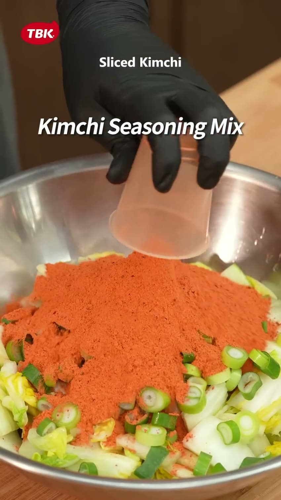
외국인들 상대로 김치 담그는 방법으로 알려질까봐 혹시나 하는 마음에 내가 제대로 본게 맞는지 확인차 한번 봐봄.
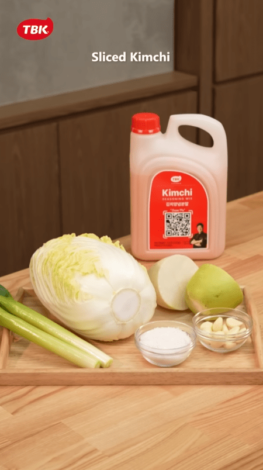
재료는 배추, 무, 대파, 소금, 마늘, tbk의 김치 믹스 분말
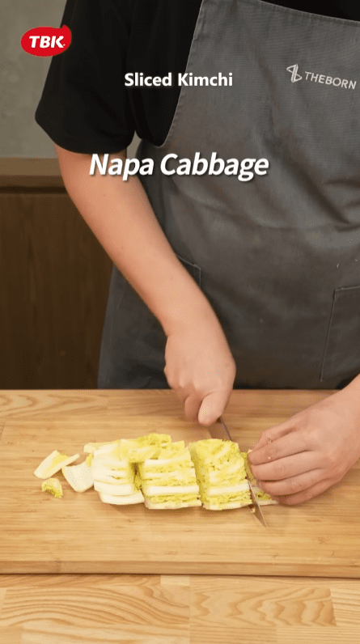
김치 썰어 주시고 (참고로 갤주 손 아닌듯?)
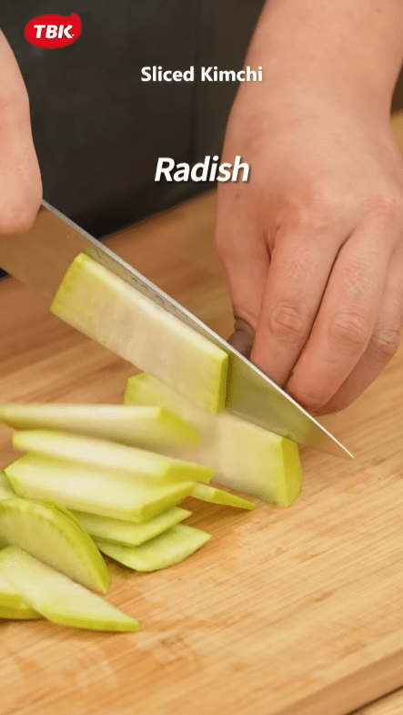
무도 썰어줌
근데 채 썰지 않음
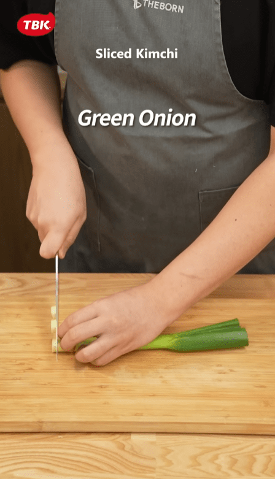
양파는 왜 써는지 모르겠는데 양파도 썰어줌
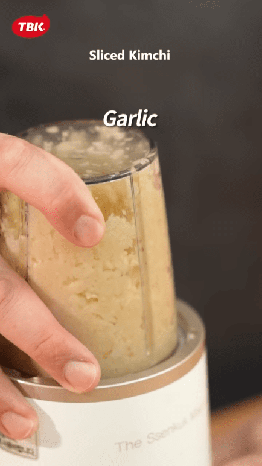
마늘 갈갈
김치 분말을 컵에 담아 주는데
이렇게 해야 됩니까??
더 편한 소스통이 있을 것 같은데......
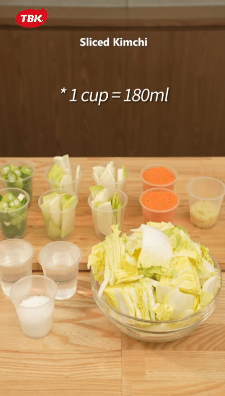
아무튼 재료는 준비가 되었으니 이제부터 김치 제조ㄱㄱ
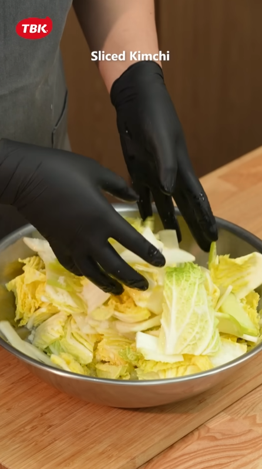
무랑 배추랑 소금이랑 물 다 섞어서 믹스해줌
근데 위에도 말했지만 무를 채썬게 아니라서 도대체 뭔가 싶네
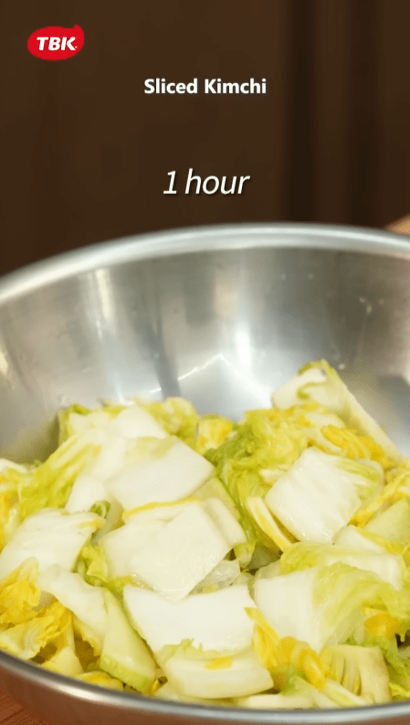
보통 김장 김치는 하루나 최소 반나절 정도 절여둬야 하는데 양이 양인지라 일단 1시간만 재움
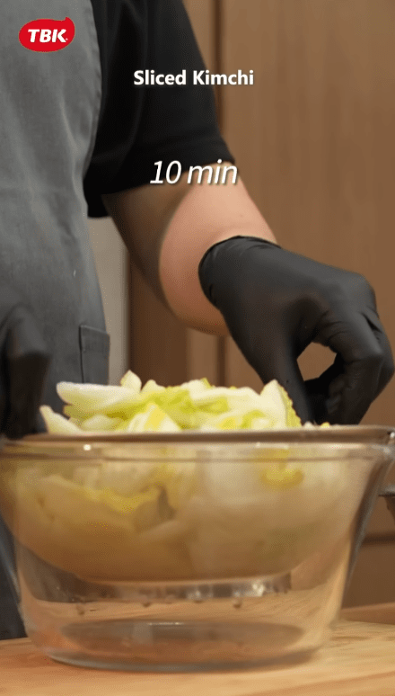
절여둔거 씻어주고 10분 정도 기다림
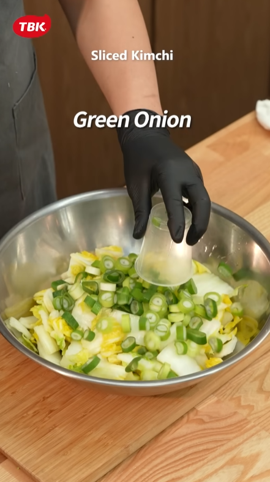
대파ㅋㅋㅋ 넣어줌 ㅋㅋㅋ
이거 뭐 파기름 레시피 아니고 김치 레시피임!!!
샐러드 김치, 겉절이 레시피도 아니고 배추 김치!!
엉클 로저가 보면 "하이야..." 하고 좌절할 상황
김치 분말 넣어주고
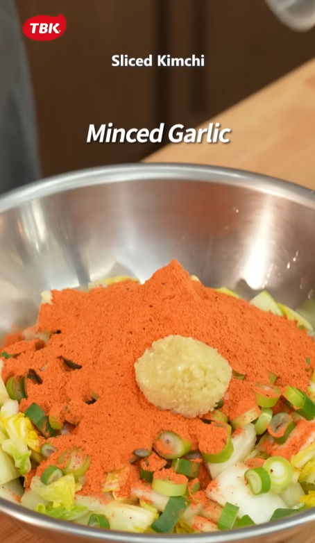
다진 마늘 넣어준 다음
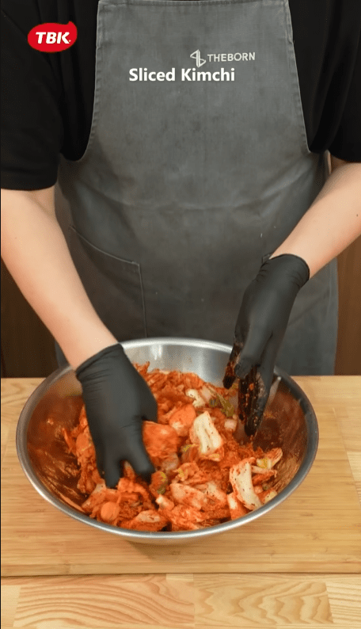
믹스 해줍니다
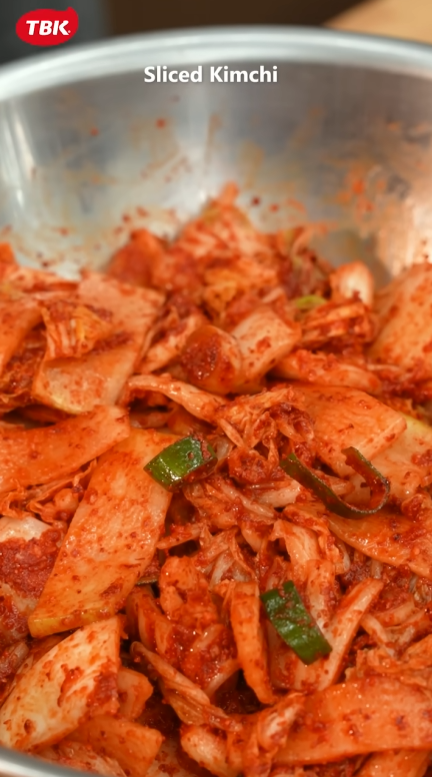
파김치가 있긴 하지만, 배추 김치에 대파는 난생 처음 보네 흠
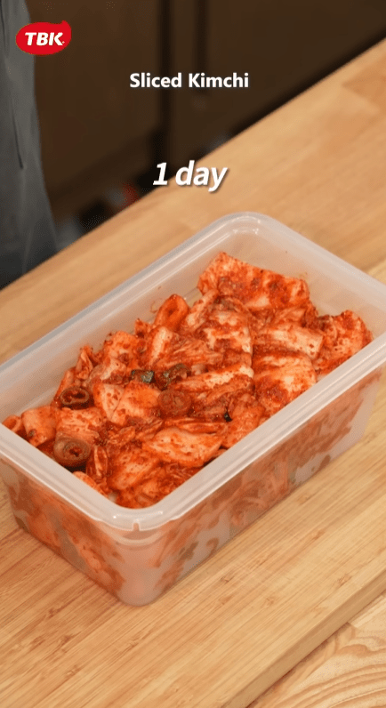
이렇게 넣어서 하루 정도 숙성하면
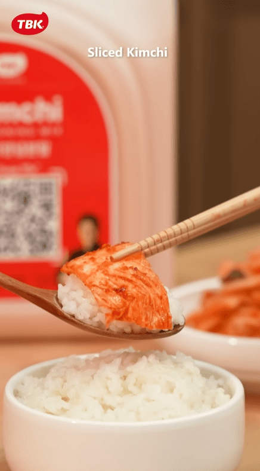
마슀는 코리안 배추 킴치 완성!!
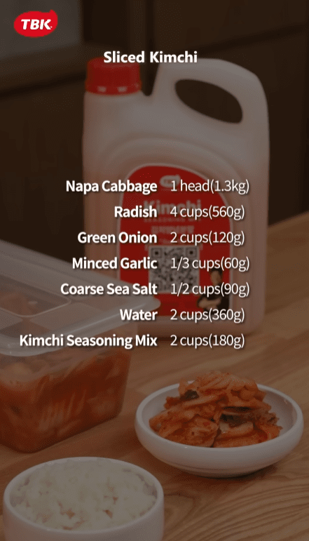
근데 관계자 님들
제대로 판매하는 상품 레시피에도 계량을 컵으로 하실건가요???
댓글
수집 당시 댓글 154개
heyzle · 11.24 23:51:52
· ㅇㅇ · 11.25 00:21:21
●○●●○○ · 11.24 23:52:52
· 제변소 · 11.24 23:55:51
ㅇㅇ · 11.24 23:54:46
· ●○●●○○ · 11.24 23:55:33
· ㅇㅇ · 11.24 23:56:33
· ●○●●○○ · 11.24 23:57:21
· ●○●●○○ · 11.24 23:57:53
· ㅇㅇ · 11.25 00:00:29
· ㅇㅇ · 11.25 00:01:04
· ●○●●○○ · 11.25 00:04:06
· ㅇㅇ · 11.25 00:04:55
· ●○●●○○ · 11.25 00:06:26
· ㅇㅇ · 11.25 00:10:13
· ●○●●○○ · 11.25 00:11:39
· ●○●●○○ · 11.25 00:12:09
· ●○●●○○ · 11.25 00:13:13
· ㅇㅇ · 11.25 00:20:50
· ㅇㅇ · 11.25 00:33:45
· ㅇㅇ · 11.25 00:34:23
· ㅇㅇ · 11.25 00:41:44
· ●○●●○○ · 11.25 00:42:54
· ㅇㅇ · 11.25 00:45:21
· ●○●●○○ · 11.25 00:46:10
· ●○●●○○ · 11.25 00:46:56
· ㅇㅇ · 11.25 00:48:21
· ●○●●○○ · 11.25 00:49:52
· ●○●●○○ · 11.25 00:51:21
· ㅇㅇ · 11.25 00:51:31
· ●○●●○○ · 11.25 00:54:24
· ●○●●○○ · 11.25 00:55:46
· ㅇㅇ · 11.25 00:57:13
· ●○●●○○ · 11.25 00:58:54
· ●○●●○○ · 11.25 01:03:24
· ●○●●○○ · 11.25 02:10:26
· ㅇㅇ · 11.25 03:38:18
· ㅇㅇ · 11.25 03:59:26
· ㅇㅇ · 11.25 04:41:33
· ㅇㅇ · 11.25 07:14:30
· ㅇㅇ · 11.25 07:29:49
· ㅇㅇ · 11.25 08:54:01
ㅇㅇ · 11.24 23:54:51
· 겐쉰프 · 11.25 00:17:16
ㅇㅇ · 11.25 00:03:18
삭제됨 · 11.25 00:08:16
· ㅇㅇ · 11.25 00:58:08
ㅇㅇ · 11.25 00:08:17
히이잉 · 11.25 00:13:17
ㅇㅇ · 11.25 00:21:14
ㅇㅇ · 11.25 00:25:17
ㅇㅇ · 11.25 00:26:16
ㅇㅇ · 11.25 00:27:10
ㅇㅇ · 11.25 00:30:24
· ㅇㅇ · 11.25 00:31:52
· ㅇㅇ · 11.25 01:59:00
· ㅇㅇ · 11.25 05:38:51
ㅇㅇ · 11.25 00:32:31
가디안 · 11.25 00:35:50
· ㅇㅇ · 11.25 01:24:40
ㅇㅇ · 11.25 00:41:00
ㅇㅇ · 11.25 00:42:28
ㅇㅇ · 11.25 00:45:39
ㅇㅇ · 11.25 00:52:15
· ㅇㅇ · 11.25 07:17:32
ㅇㅇ · 11.25 00:56:51
ㅇㅇ · 11.25 00:58:34
dd · 11.25 01:07:27
ㅇㅇ · 11.25 01:24:18
· ㅇㅇ · 11.25 03:42:45
ㅇㅇ · 11.25 01:24:29
ㅇㅇ · 11.25 01:24:38
ㅇㅇ · 11.25 01:27:02
ㅇㅇ · 11.25 01:31:10
히이잉 · 11.25 01:35:40
ㅇㅇ · 11.25 01:57:42
ㅇㅇ · 11.25 02:03:41
환란 전 교회 휴거 · 11.25 02:12:00
ㅇㅇ · 11.25 02:45:19
· 소설쟁이 · 11.25 05:51:59
ㅇㅇ · 11.25 02:53:21
ㅇㅇ · 11.25 02:54:12
ㅇㅇ · 11.25 02:54:19
ㅇㅇ · 11.25 03:15:00
ㅇㅇ · 11.25 06:23:52
운지노무스케 · 11.25 06:47:21
찬스킴 · 11.25 07:11:02
ㅇㅇ · 11.25 07:52:53
ㅇㅇ · 11.25 08:33:19
슈퍼지구민주투사 · 11.25 08:39:13
ㅇㅇ · 11.25 08:57:15
ㅇㅇ · 11.25 09:35:39
ㅇㅇ · 11.25 09:38:24
· ㅇㅇ · 11.25 09:38:43
ㅇㅇ · 11.25 09:45:43
ㅇㅇㅇ · 11.25 10:23:29
ㅇㅇ · 11.25 11:22:24
ㅇㅇ · 11.25 13:10:57
ㅇㅇ · 11.25 15:51:53
ㅇㅇ · 11.25 21:08:53
ㅇㅇ · 11.23 22:33:08
ㅇㅇ · 11.23 22:33:16
그림뒤그남자 · 11.23 22:36:29
백갤러1 · 11.23 22:52:53
· 백갤러2 · 11.24 04:54:31
ㅇㅇ · 11.23 22:57:13
차단돼서만듬 · 11.24 00:37:04
ㅇㅇ · 11.24 00:41:37
ㅇㅇ · 11.24 02:39:59
ㅇㅇ · 11.24 07:09:23
정신나간새끼 · 11.24 16:21:51
ㅇㅇ · 11.24 16:23:57
ㅇㅇ · 11.24 16:24:17
백갤러3 · 11.24 16:53:21
ㅇㅇ · 11.24 16:58:11
ㅇㅇ · 11.24 17:07:47
학헉학 · 11.24 17:17:15
ㅇㅇ · 11.24 17:22:14
ㅇㅇ · 11.24 17:31:32
백갤러5 · 11.24 17:34:41
ㅇㅇ · 11.24 17:36:49
· ㅇㅇ · 11.24 18:36:12
ㅇㅇ · 11.24 17:59:28
백갤러6 · 11.24 17:59:56
· ㅇㅇ · 11.25 00:18:42
백갤러7 · 11.24 18:41:09
ㅇㅇ · 11.24 19:27:42
ㅇㅇ · 11.24 19:56:06
ㅇㅇ · 11.24 21:04:03
ㅇㅇ · 11.24 21:07:58
백갤러8 · 11.24 21:29:13
백갤러9 · 11.24 22:29:36
ㅇㅇ · 11.24 22:56:41
ㅇㅇ · 11.24 23:36:03
ㅇㅇ · 11.24 23:42:03
피고인 · 11.24 23:42:31
ㅇㅇ · 11.24 23:43:12
제변소 · 11.24 23:43:21
· 제변소 · 11.24 23:45:19
· ●○●●○○ · 11.24 23:53:09
ㅇㅇ · 11.24 23:43:32
· ㅇㅇ · 11.24 23:43:52
· ㅇㅇ · 11.24 23:44:05
· ㅇㅇ · 11.25 00:26:25
ㅇㅇ · 11.24 23:44:06
ㅇㅇ · 11.24 23:44:46
llllllIllllll · 11.24 23:48:02
ㅇㅇ · 11.24 23:48:24
· 겐쉰프 · 11.25 00:17:43
· ㅇㅇ · 11.25 01:22:34
씹을거리 · 11.24 23:48:56
ㅇㅇ · 11.24 23:49:57
●○●●○○ · 11.24 23:51:00
ㅇㅇ · 11.24 23:51:21